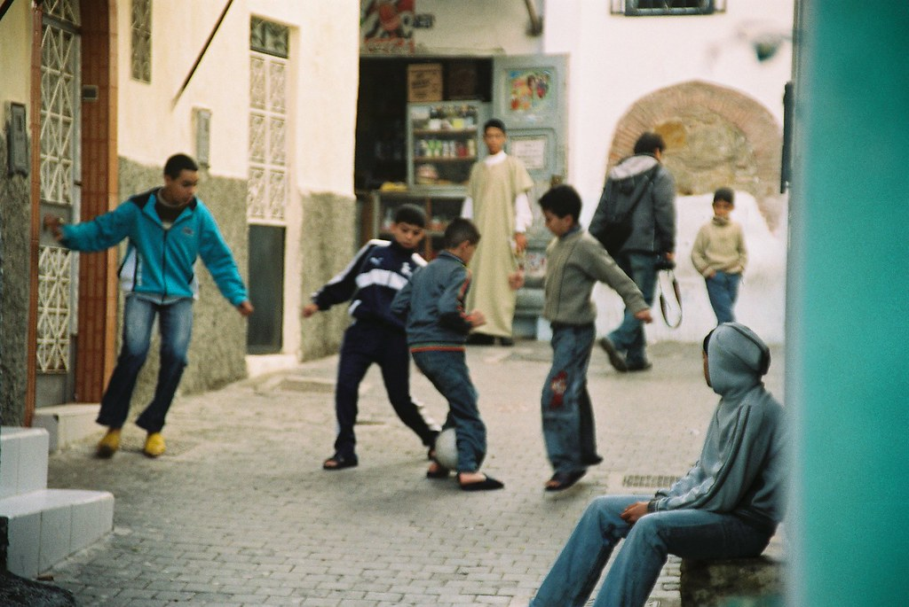
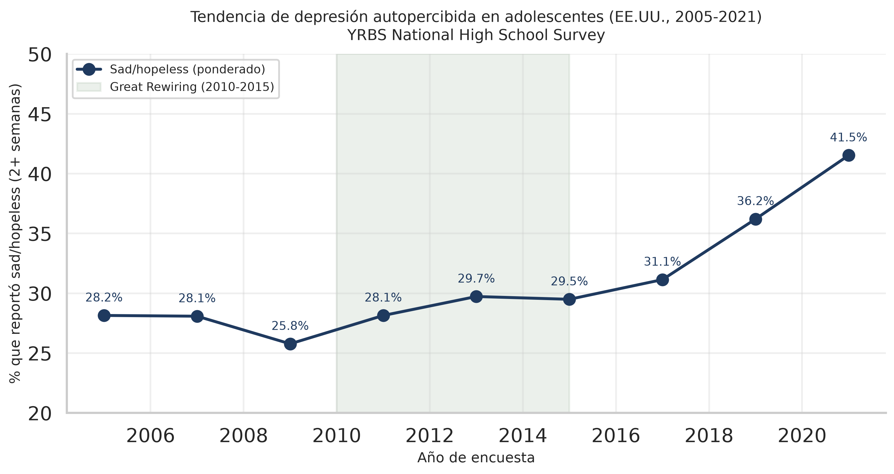
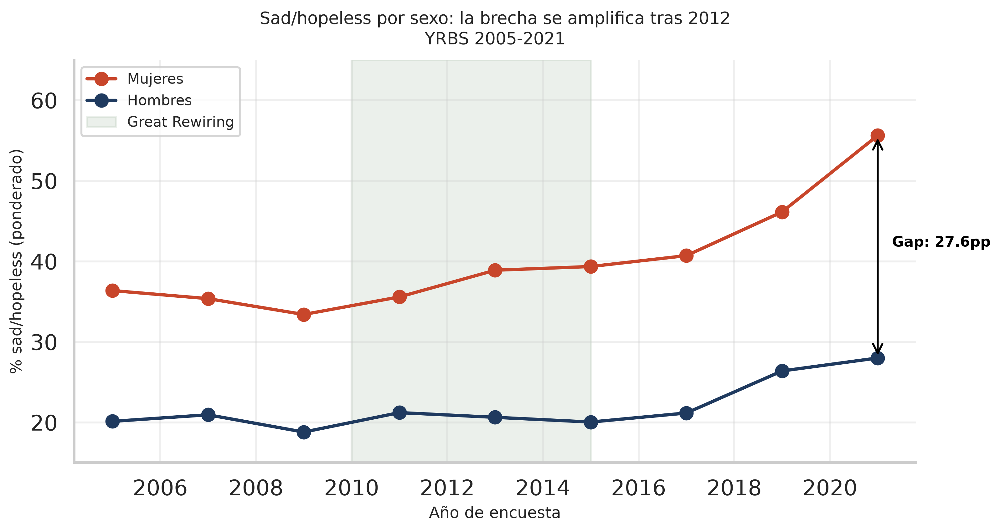
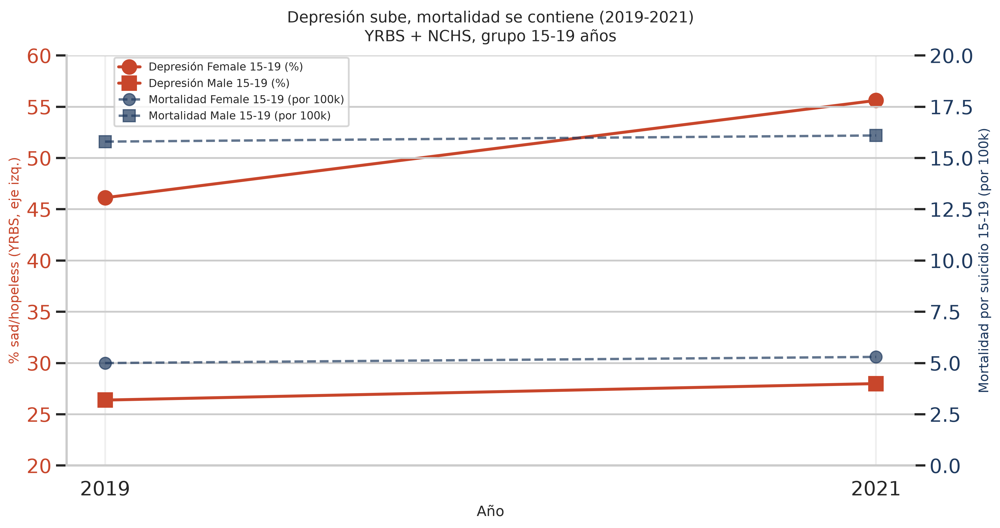
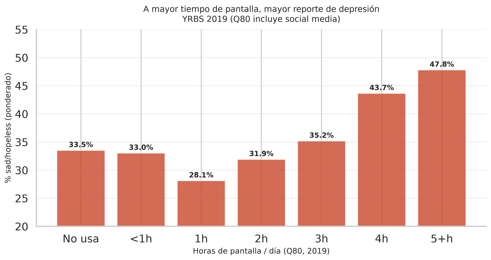
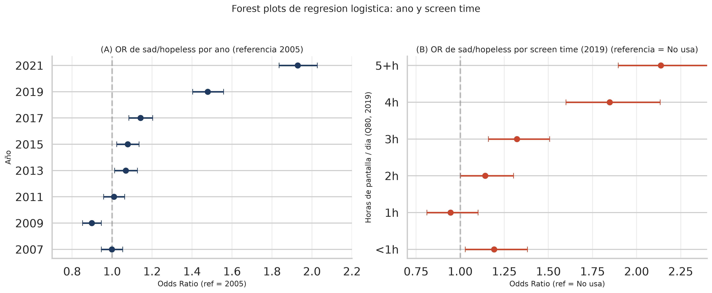

Recoger
Lockers magnéticos al entrar al colegio. Reducir la exposición durante la jornada escolar.

Proyecto Final · Análisis de Datos
El coste de la infancia digital
Cambio en el tiempo · 2005–2021
“El promedio oculta la verdad. Hay que hacer drill‑down.”

El hallazgo más impactante del análisis
“La brecha se amplifica un 71%.”

Depresión sube · Mortalidad se contiene
“La mortalidad es un indicador rezagado.”

La dosis importa · horas de pantalla vs. riesgo
“No se trata de satanizar la pantalla, se trata de entender la dosis.”

Por qué podemos confiar en estos datos
“Si no es confiable, no sirve.”
Encuesta estratificada por colegio con n = 134 674 estudiantes entre 2005 y 2021. No es una muestra simple.
Regresiones logísticas ponderadas con errores estándar cluster-robust a nivel de colegio. Corrige el efecto de diseño.
Validamos el patrón estratificando por sexo × raza. La brecha de género es universal y estadísticamente blindada.

Framework de ingeniería social · 4 palancas operacionales
“Escalable. Medible. Basada en datos.”
Lockers magnéticos al entrar al colegio. Reducir la exposición durante la jornada escolar.
Recreo estructurado y actividades presenciales. Llenar el vacío de atención que llena el teléfono.
Encuestas semestrales de bienestar validadas (PHQ-A). Detección temprana.
Talleres para profesores en detección de señales y derivación a salud mental.
1 de cada 2 adolescentes reporta tristeza persistente.
Más de 3 h/día de pantalla duplica el riesgo.
Phone-Free Schools + RCT: medible, escalable, ético.
Muchas gracias. Quedo a su entera disposición para preguntas.